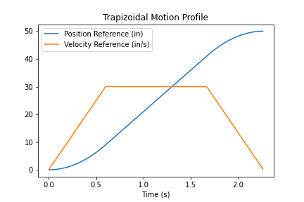

Motor control
Introduction
Rationale
The bonding machine needs to control 4 independent axes (X, Y, Z and θ ) with 4 motors as already described in the
mechanical description.
Furthermore, we decided to keep the master control unit (MCU) separate from the motor drivers.
Each driver is a slave board communicates with the MCU through a custom serial protocol
(see system architecture), and each motor is controlled by a separate board.
From demo boards to a custom PCB
The heart of the driver is a STM32F302R876 microcontroller by ST Microelectronics which controls a BD16912EFV-C motor driver IC by ROHM Semiconductor. Each manufacturer offers demo board we could buy and use for our project, but we decided to design our own custom PCB to host the two ICs for the following reason:
- The STM Nucleo demo boards are expensive; the same goes for the BD16912EFV-C demo boards. It was cheaper to buy the individual components and assemble them on a custom PCB, as PCB manufacturing in China is very cheap nowadays (5 small boards cost €5). Shipping is actually more expensive than manufacturing, as fast shipping with a courier costs €20;
- Demo boards are bulky and have a lot of unnecessary headers and components; our boards contain the bare minimum to make the circuit work reliably, reducing the physical size of the drivers. This is important because we want to house all electronics in a small box mounted on the the bonding machine itself;
- Building custom PCBs is an important skill that cannot be taught in ordinary classroom lessons; we figured we could use this opportunity to consolidate our PCB design skills.
Drivers boards in detail
The schematic, the PCB layout and the 3D model can be found in the downloads area of this website.
Schematic

Image gallery
- Top-left: top view of the PCB;
- Top-right: bottom view of the PCB;
- Bottom-left: 3D view of the PCB;
- Bottom-right: assembled PCB.


PI controller
PI controller: current, speed, position nested loops
The complete control model is composed of three nested loops (position, speed, current). You can see the
three nested loops of the complete simulated system in the image below.
 The modus operandi is the following:
The modus operandi is the following:
- The user chooses a target position;
- The position loop generates a target speed to reach the target position;
- The speed loop generates a target current to reach the target speed;
- The current loop modulates the current in the motor and moves it;
- Position, speed and current are always fed back to the respective control loops.
Current PI controller
A generic PI controller can be modeled with the block scheme on the bottom-left. Its transfer function is
We now wish to implement a current control loop to control the movement of a motor. We take the generic PI controller scheme and connect a simple motor model to its output. The result is shown in the image on the bottom-right.
This current control loop operates in the following way:
- It receives the target current from a previous block;
- It actuates a change in the current to reach the target;
- The actual current flowing in the motor windings is measured and brought back into the input of the feedback loop.

Choosing the parameters of the current loop
We aim to control the motor with smooth accelerations and decelerations, avoiding overshoots and oscillations. To achieve the performance
we desire we need to perform zero-pole cancellation on the \(G(s)\) loop transfer function reported above.
It can be shown (see attached files) that the optimal values of \(K_a\) and \(K_b\) to have zero-pole cancellation are:
- \(K_b = \frac{R}{L}\)
- \(K_b = L \cdot BW\) where \(BW=2 \pi f\) is the bandwidth of the system
The L and R parameters were estimated using a multimeter. The system bandwidth is a degree of freedom we have to choose: more bandwidth means faster movement, but the system becomes more susceptible to noise. We empirically chose a bandwidth of 1kHz as the system behaved properly at that frequency.
Motor model
Speed loop PI controller
Closing the speed loop control is more complex compared to the current loop due to the presence of the mechanical model of the load which is normally unknown. While the mechanical parameters of the motor are usually reported in its datasheet, the mechanical load actuated by the motor must be approximated using a generic low pass function like the following:
The motor is modeled as
The complete speed loop is shown in the image below.

The low pass filter has the following transfer function:
Now, by imposing that (\lambda_r=0\) (i.e., the viscous friction is negligible) we can write the complete open loop transfer function as
- Velocity PI (note that there are two constants we need to determine, namely \(K_c\) and \(K_d\));
- Current loop;
- Motor;
- Load;
- Low pass filter.
Choosing the parameters of the speed loop
The velocity PI has two degrees of freedom \(K_c\) and \(K_d\). FINIRE QUA
Loop models
You can find all the PI controllers' Simulink models (current, speed, position) in the following image:
- Top-left: current controller;
- Top-right: speed controller;
- Bottom-left: position controller.


Simulink models and further reading
We followed a technical guide by a Texas Instruments employee to implement the motor controller. A PDF print of the original
article can be found in the downloads area of this website.
You will also find the Simulink models discussed in this section.
Motion profiling

In order to achieve smooth movement on each of the four axes, we decided to implement trapezoidal motor profiling
by following this article (you can find a
PDF print of this article in the downloads area).
As you can see on the image on the right, by shaping the velocity target as the trapezoid (orange line), a smooth
movement can be achieved (blue line): the motor first accelerates, cruises at a constant speed for a while,
and then decelerates smoothly when the destination is almost reached.
The control algorithm for motion profiling operates in the following way:
- Setup phase:
- Obtain the start and finish positions;
- Set the maximum acceleration and cruising speed;
- Calculate the speed trapezoidal profile;
- Movement phase (inside a while loop):
- Calculate the setpoint position based on the trapezoidal speed profile;
- Command the PI controller to reach the target position;
- Repeat until the destination is reached.